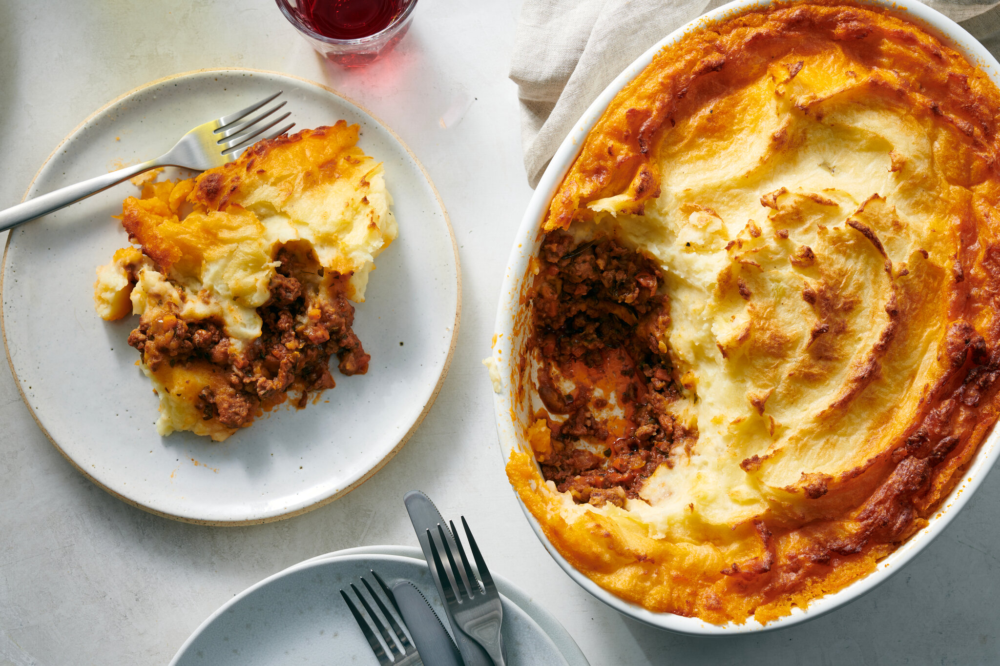

Shepherd's Pie

Description
This recipe is truly an Irish comfort food.
Whenever I take a bite of this rich and umami dinner, I'm transported home for just a little while.
I hope you enjoy it as much as me!
Ingredients
Mashed Potatoes
- 1200g Yukon God potatoes
- ½ cup chives
- 110g grated aged white cheddar
- ½ cup unsalted butter
- ½ cup milk
- 2 egg yolks
- kosher salt
- white pepper
Filling
- 450g ground lamb (or beef for cottage pie)
- ½ large onion
- 4 medium carrots
- frozen peas
- 1 cup Guinness
- 1 cup beef stock
- tomato paste
- 1½ tablespoons flour
- worcestershire sauce
- 3 cloves garlic
- a few rosemary sprigs
- a few thyme sprigs
Steps
Mashed Potatoes
- Peel the potatoes and cut them in half. Place them in a large pot and cover with lightly salted cold water.
- Boil for about 20 minutes, or until a paring knife cuts through with no resistance.
- Place over medium-low heat and stir gently for about a minute. This helps remove any excess water.
- Kill the heat and add the butter, chives and most of your cheese. The rest of the cheese will go on top when we bake it!
- Mash everything together and add salt and pepper to taste.
- Finally, beat the milk and egg yolks together. If the potatoes have cooled down a bit, mix in the milk and eggs. We don't want the egg yolks to cook in the hot potatoes!!
Filling
- Finely mince the carrots and half onion.
- Brown the mince into a lightly oiled and preheated pan, then drain excess fat so that 2-3 tablespoons remain.
- Add the onions and saute until translucent, then add the carrots and saute for 2-3 minutes. Don't worry if they're raw, they'll cook in the oven!
- Make a hole in the middle of the pan and add the garlic and tomato paste. Mix together and saute for 2-3 minutes, then add the rosemary and thyme.
- Add the flour to the mixture and mix until the smell of raw flour is gone and a fond has formed on the bottom of the pan.
- Deglaze with the Guinness and beef stock, making sure to scrape up all the fond after.
- Add worcestershire sauce to taste, along with the maderia and demi-glace if you're using it.
- Mix together until the sauce has thickened. When you drag a wooden spoon across the bottom of the pan, it should leave a trail.
Putting It All Together
- Preheat your oven to 175°C.
- Spoon the filling into your pie dish, topping with the frozen peas. Spoon the mash over the top and texture the top with a few strokes of a fork.
- Place the dish into your preheated oven and bake for 15 minutes. Top with more cheese and bake for another 10 minutes.
- Let it cool for a few minutes, and enjoy!